DragTime - Drag your time!
We’ve redefined time.
With one simple drag, timers, reminders, and events appear—turning moments into focus and flow.
No setup, no hassle. DragTime connects everything seamlessly, making productivity effortless.
Simple. Powerful. DragTime.
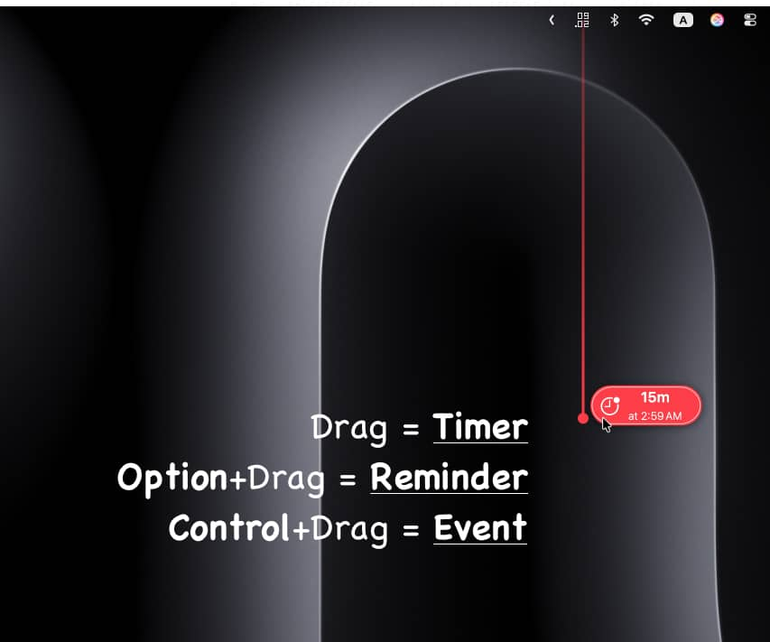
Create time with a drag.
Make it yours with Smart Drag

One Drag. Everything.
Just drag from the menu bar. That’s all it takes.
- A simple drag creates a Timer
- Hold ⌥ Option and drag for a Reminder
- Hold ⌃ Control and drag for a Calendar Event
Your intuition is the interface.
With Smart Drag, everything is fully customizable in Settings.
Assign any function to any key combination—choose what feels most natural in your hands.
Drag, Your Way
The same drag can carry different intentions.
- Timers in seconds, minutes, or hours. Quick tasks in seconds, long projects in hours.
- Reminders in minutes, hours, or days. Today’s to‑dos in minutes, long‑term plans in days.
The drag style is yours to choose.
Free Mode offers boundless flexibility, while Snap Mode aligns perfectly at 90° for clean precision.
Customize every detail—color, thickness, and style of the drag line. Create a DragTime that feels at home on your Mac.
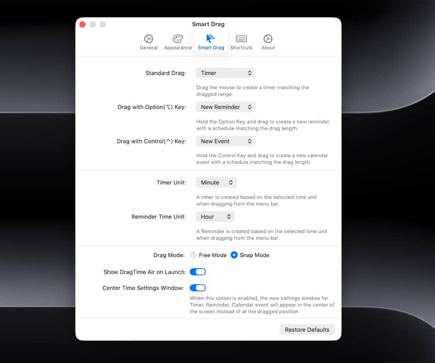
Now, set the time
When you finish the drag, a Timer window appears. Your chosen time is displayed—and can be adjusted anytime.
No need to type a title. A smart, time‑based title is generated automatically.
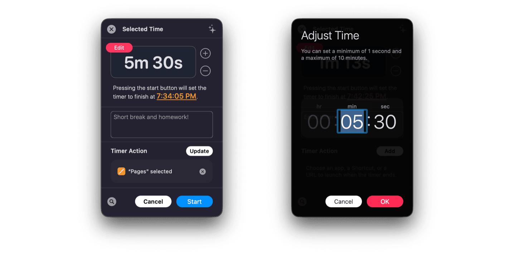
Choose where the window appears: right at the end of your drag, or always centered on your screen.
It adapts to your workflow.
And DragTime remembers what you’ve done, offering thoughtful suggestions every time.
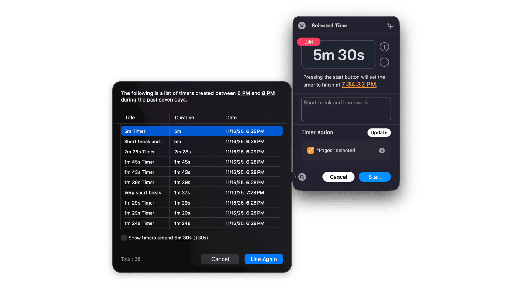
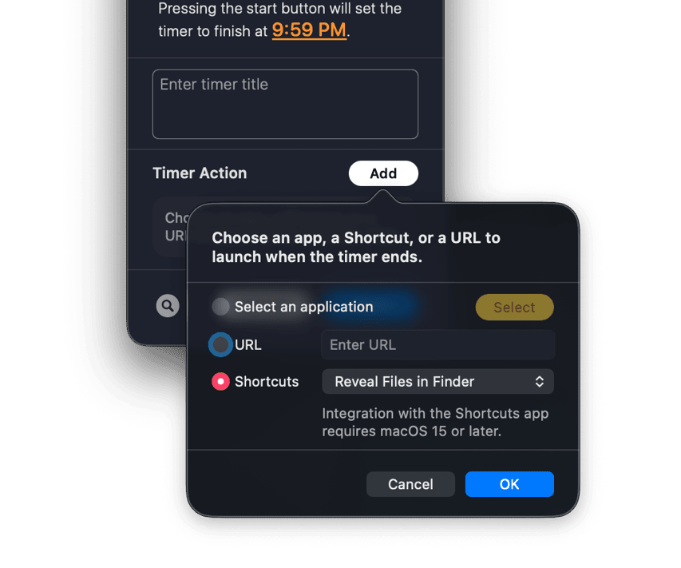
Timer Actions
When the Timer Ends, the Next Begins.
Set what happens automatically when your timer completes.
- Launch App: Open any app the moment your focus session ends. Start Mail after deep work, or play Music when your break is over.
- Open URL: Jump straight into your Zoom meeting with a link that opens on cue. Or display your project dashboard as soon as the workday starts.
- Run Apple Shortcuts: Trigger any Shortcut you’ve created. Control smart home lights, organize files, or send a notification message.
This isn’t a timer that simply rings. It’s a workflow that flows seamlessly into your next action.
On-Device AI
A Timer That Learns You. DragTime integrates with the macOS Foundation Models framework to understand your unique time patterns.
What it learns:
- The durations you set — do you prefer 15 minutes, or lean toward 25?
- The times you create — focus timers in the morning, break timers in the afternoon.
- The titles you’ve used — Weekly Meeting, Prep for Meeting, Lunch Break.
- Your accumulated timer history — completion rates, repeat patterns, usage frequency.
AI for Timers
When you create a timer, DragTime suggests the right duration and title.
At 9 AM, it may propose your usual Work Start – 25 minutes.
At 2 PM, it might suggest Deep Focus – 50 minutes.
The more you use it, the smarter and more precise the suggestions become.
AI for Reminders
Reminders work the same way.
DragTime analyzes your set times, reminder schedules, and past usage to recommend the most fitting time and title.
Your Privacy
All learning and processing happens only on your Mac. Powered by the macOS Foundation Models framework, no data is ever sent outside. Your time patterns live solely on your Mac—never uploaded, never shared. With complete on‑device processing, your privacy is fully protected. Your time is yours.
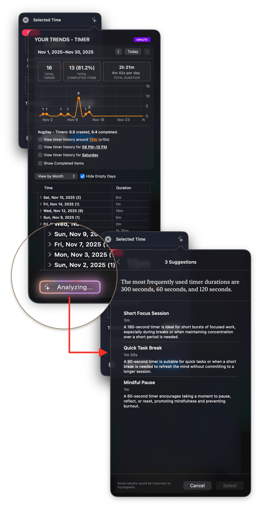
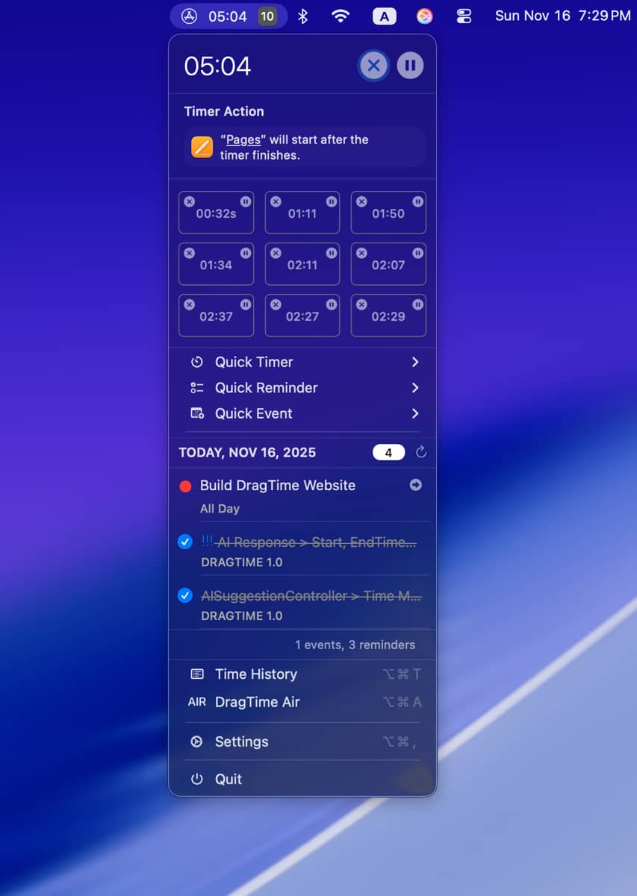
The Menu Bar, Your Center of Everything
See it all, at a glance.
DragTime transforms the menu bar into the hub of your time management.
Check your running timers instantly—up to 10 timers at once. Each timer carries its own unique icon, so you know exactly what’s in progress at a glance.
Hover over an icon to reveal its title. Click to access full controls.
Choose where the window appears: right at the end of your drag, or always centered on your screen.
It adapts to your workflow.
Your day, right there too.
Reminders and calendar events appear alongside your timers. Complete reminders directly from the menu bar—just a simple checkbox. Click a calendar item to open Apple Calendar and jump straight to the event.
Total Control at Your Fingertips.
Pause, resume, stop—manage every timer with ease. Timers, reminders, calendar events—everything united in one space: the menu bar.
Reminders & Calendar Integration
Smart Scheduling, Without Overlaps.
Reminders and calendar events begin with a simple drag.
In the creation window, switch between Reminder and Calendar with a single click. Started as a reminder but want it as a calendar event? One click is all it takes.
Choose where the window appears: right at the end of your drag, or always centered on your screen.
It adapts to your workflow.
Duplicate Prevention System
When setting a time, DragTime alerts you if a reminder or calendar event already exists in that slot.
Unnecessary overlaps are prevented before they happen.
Edit your scheduled time anytime, and—just like timers—titles are yours to define freely.
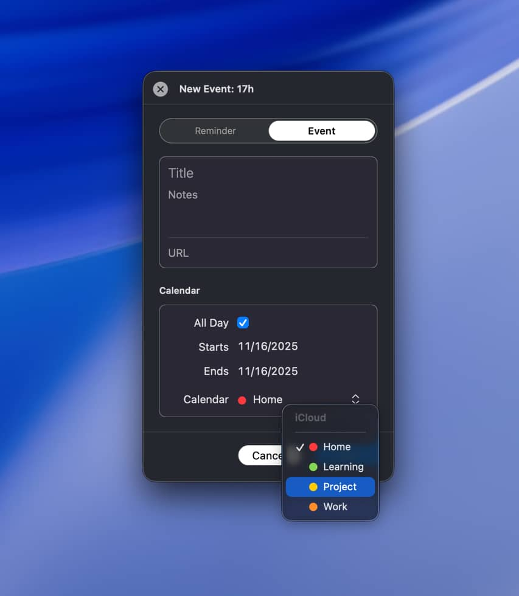
Notifications
Notifications You Can’t Miss.
Choose your style from three powerful options.
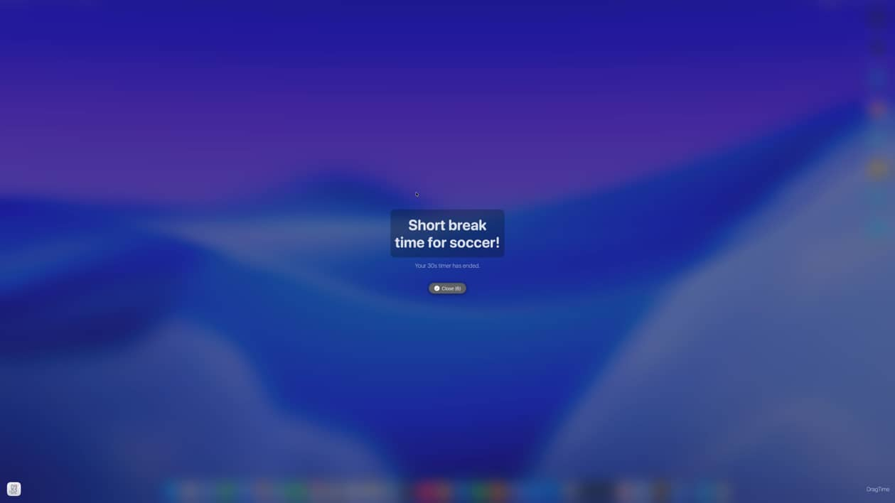
macOS Native Notifications
Gentle notifications that never interrupt. They quietly stack in Notification Center, ready whenever you are.
Full‑Screen Notifications
Bold, immersive notifications that fill your entire screen. Perfect for the moments that demand your immediate attention.
Combined Notifications
Use both macOS and full‑screen alerts together. A double guarantee—you’ll never miss a thing.
27 Notification Sounds
From soft chimes to striking alarms, pick the tone that matches your task. A clear alert for important meetings, a soothing melody for break time.
Craft your own personal signal of time.
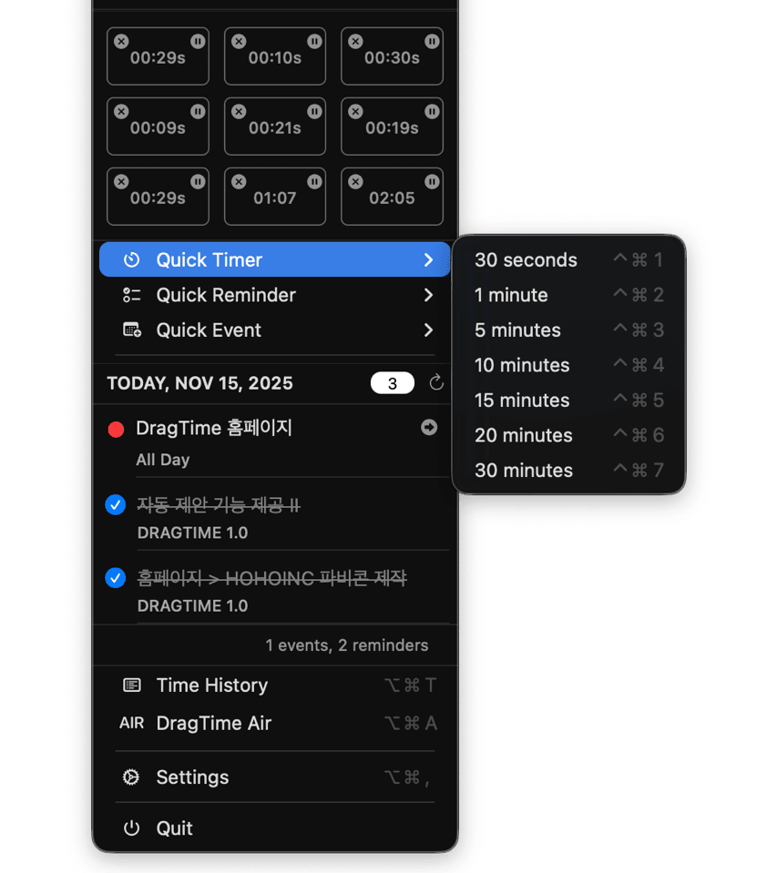
Quick Actions
Instant Creation with a Single Shortcut.
Sometimes even dragging feels too slow. Assign your most‑used times to a shortcut key.
Timer Quick Actions
30 seconds, 1 minute, 5 minutes, 10 minutes, 15 minutes, 20 minutes, 30 minutes—instantly created and running right away.
Reminder Quick Actions
Set reminders in 5, 10, 15, 20, 30 minutes, or 1 hour.
They’re added directly to Apple Reminders.
Calendar Quick Actions
Create calendar events in 1, 3, 5, 7, 10, or 14‑day intervals.
Complete Customization
Every shortcut can be freely re‑assigned in Settings.
Find the key combination that feels most natural in your hands.
When thought moves faster than action, Quick Actions keep pace.
DragTime Air
Beyond the Menu Bar.
Is dragging from the menu inconvenient?
Hard to reach your wrist, or craving a larger workspace?
DragTime Air is a dedicated floating window on your desktop.
Same Experience, Different Space
Drag just as you would from the menu bar.
Timers, reminders, calendars—it’s all the same.
Only now, in a more comfortable space.
Instant Setting Adjustments
The DragTime Air window includes built‑in time controls.
Switch a timer from minutes to hours, or a reminder from hours to days.
no need to open Settings.
Auto‑Launch Option
Set DragTime to automatically display the Air window when the app starts.
If you use Air more than the menu bar, keep this option on.
Place it anywhere on your desktop, and drag whenever you need.
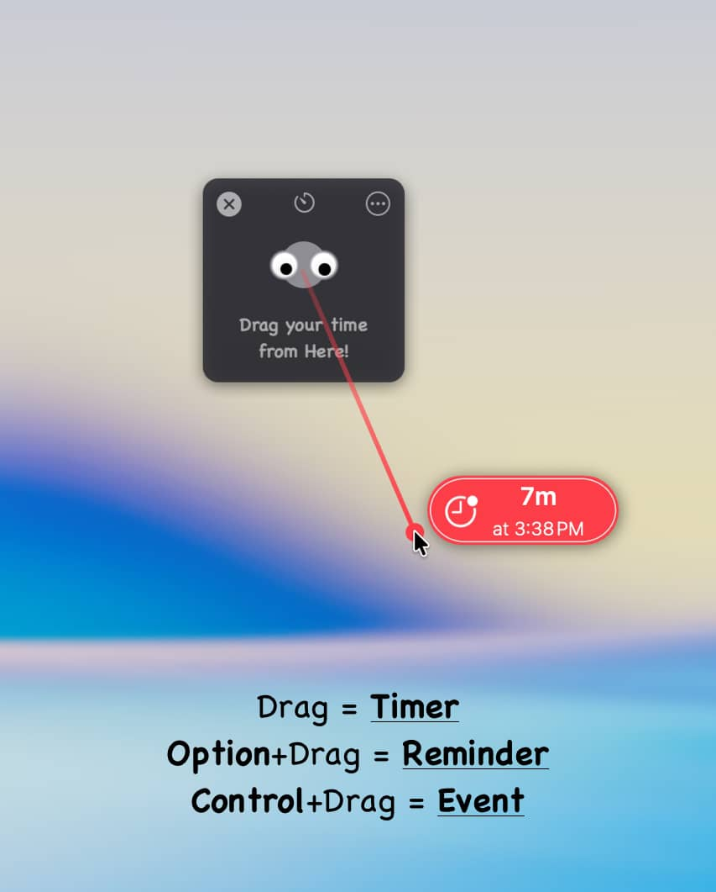
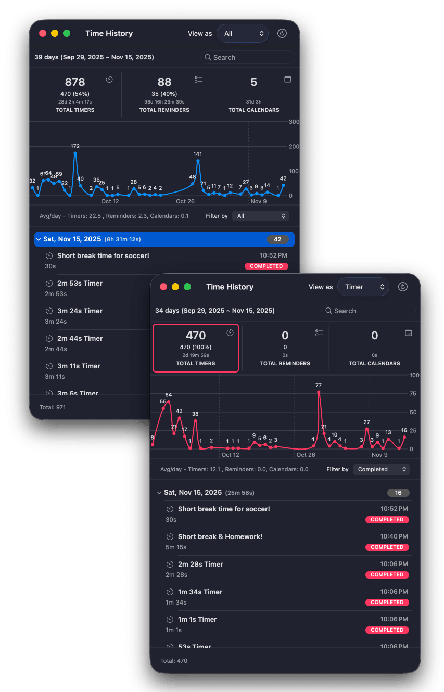
Time History.
Reflect on Your Time.
Every timer, reminder, and calendar you’ve created—organized neatly by date.
Patterns in Graphs
Visualize your daily activity with charts. Spot the most productive days, and the busiest weeks. Uncover the rhythm of your time usage.
Powerful Filtering
Want to see only completed timers? Or find unfinished reminders? Filter by completion status and focus on exactly what you need. Works seamlessly for both timers and reminders.
Smart Search
Looking for a specific timer? Type it in and results appear instantly. “Meeting,” “Break”—search anything, find everything.
Hidden Interactions
Double‑click a date to expand or collapse its items. Double‑click a timer or reminder to instantly recreate it with the same duration. When you think, "I want to use this timer again," a double‑click is all it takes.
Right‑click any item to open a contextual menu. Mark complete or incomplete, or recreate timers and reminders you’ve used before all with effortless control.
Apple Shortcuts Integration
Seamlessly connected with Apple Shortcuts.
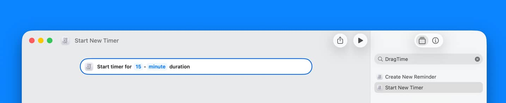
Control DragTime from Shortcuts
Create timers and reminders directly within the Shortcuts app—complete with time settings.
When your Morning Routine Shortcut runs, automatically start a 25‑minute timer.
Or embed DragTime as part of a complex Shortcut workflow.
Limitless Automation Possibilities
Start a timer when Focus Mode activates. Generate a reminder when you arrive at a specific location.
Schedule different timers automatically based on the time of day.
Add DragTime to your automation workflow, and unlock infinite ways to manage your time.
Support
We're always here to help with any question or comments - feel free to contact us.
DragTime's 'Settings > About > Send Feedback...' is perfect for privately sending us issues and feedback.
Buy DragTime for Only $5.99

Category: Productivity
Latest Version: 1.0 ()
Compatibility: Requires macOS Sonoma 14.6 or later, for Apple Silicon Macs or intel-based Macs